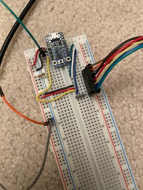

Author: Adrian Padin (padin.adrian@gmail.com) Date: December 13, 2020

Repairing bootloader: https://learn.adafruit.com/introducing-trinket/repairing-bootloader
New bootloader image: https://forums.adafruit.com/viewtopic.php?f=52&t=54218&p=376898&hilit=trinket+bootloader+skip#p376898
Allow an attachable PS2 controller (instead of break-out demo)
Put together a more sturdy setup (PCB? or solder board?)